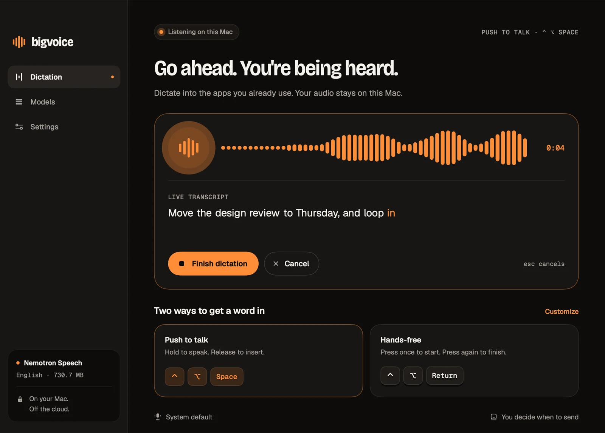
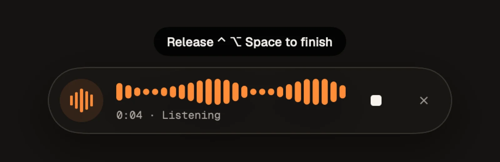
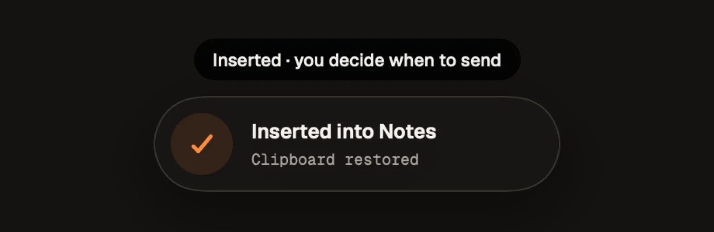
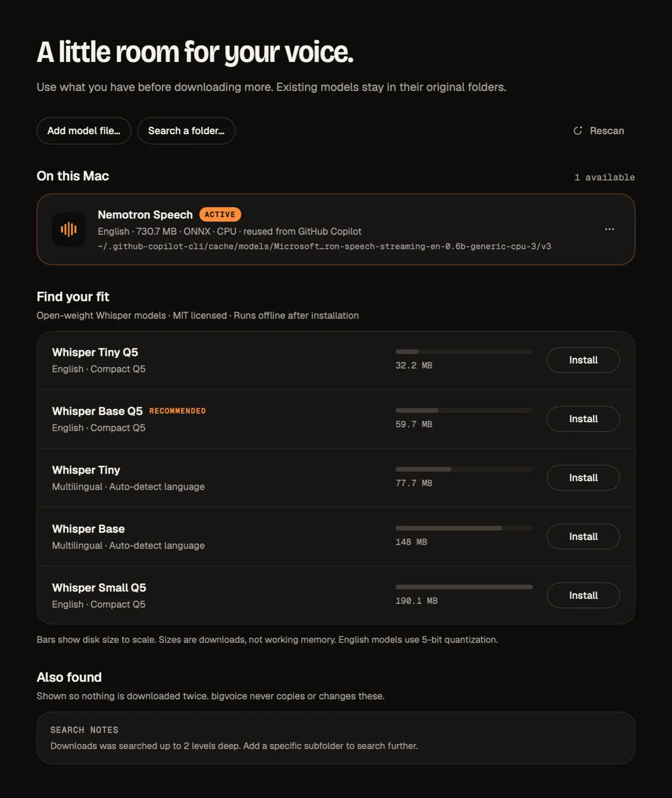

Push to talk
Hold to speak. Release to insert.
⌃⌥Space
Offline dictation · macOS
Hold a shortcut in any app, speak, and your words land where your cursor is. Speech recognition runs entirely on your Mac: no account, no cloud, no subscription.

01 — How it works
Hold to speak. Release to insert.
Press once to start. Press again to finish.
esc cancels. Both shortcuts are yours to change in Settings.


02 — Why bigvoice
whisper.cpp on Metal for Whisper GGML models, and ONNX Runtime GenAI for streaming Nemotron Speech.
bigvoice finds speech models already on your Mac, including the one the GitHub Copilot app downloads, and uses them in place. Nothing is downloaded twice.
Words appear while you speak. The final pass after you stop is always authoritative.
Runs from the menu bar and pastes into the app you were using. It checks the focus and the inserted text before doing anything.
If focus changes while you dictate, bigvoice doesn't insert. Password fields are never filled. Auto-Return is off by default.
Your clipboard is restored after insertion, and a newer copy is never overwritten.
03 — Models
At launch bigvoice looks through Copilot's model cache, MacWhisper, superwhisper, VoiceInk, Handy, whisper.cpp and Hugging Face caches, and Spotlight. Need more? Install one of five MIT-licensed Whisper models (32 MB to 190 MB) in one click. Every download is SHA-256 verified.

04 — Privacy
05 — Install
bigvoice.app to Applications.